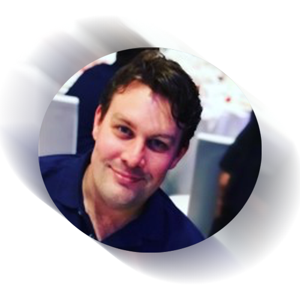

Nelson Kun
Student ID: s3941193

I'm an enthusiastic and positive individual that strives to do right by other people and also expect the same in return. I enjoy some sports, my hobbies range from playing golf to video games. I've spent the pandemic learning to broaden my culinary skills, developing my digital skills and learn new things and look forward to returning to the tropics, such as Thailand and Fiji. I was born in Melbourne and am descended from European migrants during the First and Second World Wars.
My interest in IT stems from a relatively young age, by being mesmerised by the Sega Master System in the early 90's and exhibiting sensational rage-quitting skills to my parents, and developing a love for the art and design component of game design due to the visual display of Yoshi's Island and Donkey Kong Country 2 on the SNES. I recall a significant moment playing Yoshi's Island on Christmas morning in 1995 and my family and I struggled to proceed from a certain point in the first level and being able to overcome this obstacle in this level holds dear in my memory that will always return me back to that moment and where my real interest in IT began from - the solving of problems. Playing these games beyond what would be reasonable hours of an eight year old, I felt I had discovered my passion which I had never professionally realised yet and strive to follow a path and that is what motivated me to enrol at RMIT and study Information Technology - better late than never!
Personality Profile
The Myer's Briggs test is an individual analysis how a person would interpret the world. Gauging from these results I'm a relatively balanced individual, classed as an advocate or as "the counselor".

It's regarded as the most rarest personality type with estimation showing it represents two percent of the population, with notable figures such as Nelson Mandela, Martin Luther King and Mother Theresa. (Truity, undated). Advocates are
someone that
look for a means to help others